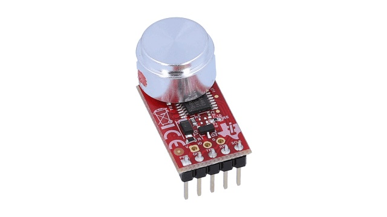
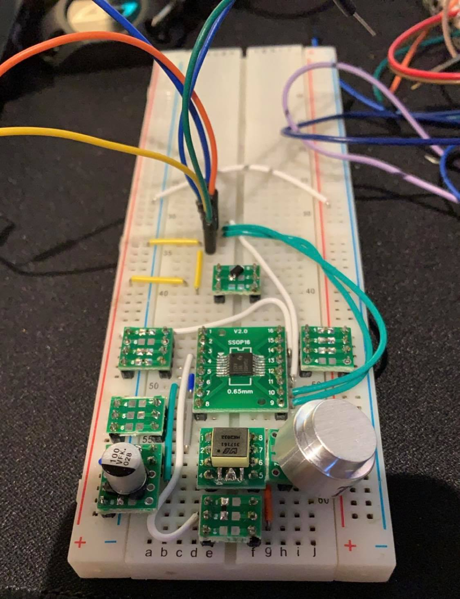

Preliminary Research
The initial plan was to use a single transducer ultrasonic sensor, this sensor was intended to have a small footprint that provides reliable distnace measurements for a relaitively low cost.
The initial sensor that was chosen was the PGA460PSM-EVM sensor made by Texas Instruments which can be seen below. This compact sensor could theoretically check off all the boxes desired of a sensor. However, the >$300 price tag was not going to work.
 https://www.ti.com/tool/PGA460PSM-EVMTo combat the extremely high price of the sensor, a breadboard version of the sensor was made using all the same components for a fraction of the price. The breadboard model is shown below.
In order to test this sensor, the sample code needed to be ported to Arduino so it could be run. Many forums were consulted while debuging and and ultimately compileable code was found. However, when the code was run, the sensor was able to send out a signal but a measureable response was never able to be found. After many hours debuging both software and hardware, a new plan was required.
Final Selection
After considering a few other options including a different single transducer ultrasonic sensor, the HCSR04 sensor was selected. It is the dual transducer sensor shown in the image below. It was decided that the mechanical model of the frame will be reworked to use these sensors. This was decided because of the ease of use and reliability of these sensors. It was decided to use premade sensors instead of trying to include the components on the custom board to reduce error caused by pcb fabrication as well as limit cost. The dual transducer sensor was selected over a cheaper single transducer sensor because the cheap single transducer sensor are very prone to inconsistent and bad readings.
 https://www.sparkfun.com/products/15569
https://www.sparkfun.com/products/15569